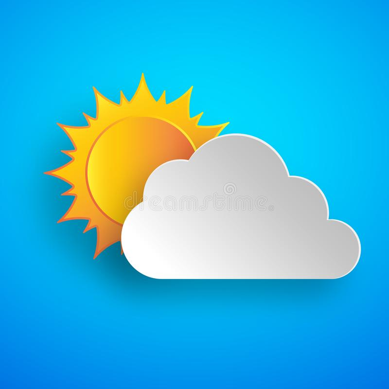

<!--
  Generated template for the HomePage page.

  See http://ionicframework.com/docs/components/#navigation for more info on
  Ionic pages and navigation.
-->
<ion-header>

  <ion-navbar>
    <ion-title style="background-color:skyblue">Weather</ion-title>
  </ion-navbar>

</ion-header>


<ion-content padding style="background-color: royalblue">
  <ion-item>
    <ion-label>City</ion-label>
    <ion-select [(ngModel)]="city" >
      <ion-option value="Johannesburg">Johannessburg</ion-option>
      <ion-option value="Pretoria">Pretoria</ion-option>
    </ion-select>

   
  </ion-item>
  
  <div *ngIf ="view==0">
    
  <button ion-button (click) = "viewWeather()" full>View</button>
</div>
<div *ngIf ="error==0">
    <p>Select the City</p>
    <div *ngIf ="view==0">
        <button ion-button (click) = "viewWeather()" full>View</button>
      </div>
  </div>
<div *ngIf ="error==1">
  <div *ngIf ="show==1" >
      <div>
          {{info.weather[0].icon_url}}<br>
      </div>
      <ion-grid>
          <ion-row id="Location">
            <ion-col>Country :{{info?.sys.country}}  City :{{city}}</ion-col>
          </ion-row>
          <ion-row>
              <ion-col>Description:</ion-col>
              <ion-col>{{info?.weather[0].description}}</ion-col>
          </ion-row>
          <ion-row>
              <ion-col>Humidity:</ion-col>
              <ion-col>{{info?.main.humidity}}</ion-col>
          </ion-row>
          <ion-row>
              <ion-col>Temperature:</ion-col>
              <ion-col>{{info?.main.pressure}}</ion-col>
          </ion-row>
          
        </ion-grid>
        
  </div>
  <div *ngIf ="reset==1">
      <button ion-button (click) = "restWeather()" full>Reset</button>
</div>
</div>


 

  
</ion-content>
